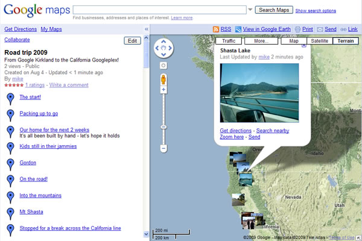
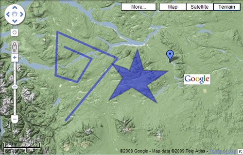

©2010 Google -
Code Home -
Terms of Service -
Privacy Policy -
Site Directory
Google Code offered in:
English -
Espaol -
-
-
Portugus -
P -
() -
()
Maps Data API
(Deprecated API)
GData APIs
Maps JavaScript API V3
Maps Javascript API V2
(Deprecated API)
Maps API for Flash
Static Maps API
Earth API
Local Search API
(Deprecated API)
Includes enterprise licensing and support
Developer Guide: JavaScript
The Maps Data API allows client applications to view and update maps and map features through the use of Google Data API feeds. These feeds are provided as URLs using the popular Atom standard. You programmatically create, alter and delete data using HTTP requests. The JavaScript client library sits on top of this HTTP protocol and enables API interactions using JavaScript methods.
Maps and map features are stored on Google's servers. A web interface to a user's maps is available through Google My Maps at http://maps.google.com/maps/mm.
Client libraries for other programming languages are also available, and are listed in the Developer's Guide introduction. If you're interested in understanding more about the underlying protocol that these libraries use, see the HTTP Protocol Guide.
Contents
Audience
This document is intended for JavaScript programmers who wish to interact with the Google Maps Data API to create, update, or delete maps and map features.
For reference information about the classes and methods provided by the client library, see the JSDoc. For general Maps Data API reference information, see the HTTP Protocol Reference.
Getting Started
Using the Maps Data API JavaScript client library requires the following:
- A Google Account, used for associating your data
- A JavaScript-enabled browser
We also recommend a JavaScript debugger.
Creating a Maps Data API Account
Maps are stored and associated with user IDs attached to a Google Account. If you do not currently have a Google Account, sign up for one here.
The Maps Data API manipulates maps which appear within the My Maps feature on Google Maps. My Maps includes two types of maps: Public, and Unlisted. A sample My Map is shown below:

Figure 1: Google My Maps interface
You can use My Maps within your browser to inspect the state of your map after data updates.
Maps created with the Maps Data API are created as Public maps, meaning they will be indexed and may show up in search results. To change your maps to Unlisted mode, you must edit them through the My Maps web UI.
Loading the Google Maps Data API
Before your client can use the client library, the client has to request the client library code from the server. There are two ways of requesting the client library:
Using the Common Loader
(google.load())
Google's JavaScript client libraries for AJAX APIs can be loaded using a
common loader function, named google.load(). This function is
contained within the jsapi JavaScript file, which you must
reference from your document's <head>:
<script type="text/javascript" src="http://www.google.com/jsapi"></script>
<script type="text/javascript">
// Load the latest version of the Google Data JavaScript Client
google.load('gdata', '2.x', {packages: ['maps']});
function onGoogleDataLoad() {
// Put your code here
}
// Call function once the client has loaded
google.setOnLoadCallback(onGoogleDataLoad);
</script>
google.load is passed three parameters:
- A string identifying the module to load. For the Maps Data API, this is
'gdata'. - The version of the module to use:
"2"is the second-to-last revision of major version 2."2.x"is the latest revision of major version 2."2.s"is the latest stable revision of major version 2. We will occasionally declare a certain version of the client library to be "stable," based on feedback we receive from developers. However, that version may not have the latest features."2.0","1.1", etc are specific versions of the library, with a specified major and minor revision number.
- A string indicating the desired
gdatapackage(s). For the Maps Data API, the value is'maps'. This parameter is optional, but is recommended, as it reduces the size of the JavaScript client by loading only the required packages.
google.setOnLoadCallback() is called once the Google Data
JavaScript client library has been fully loaded. This ensures that the browser
doesn't attempt to execute your code before the library is available. Your
client code must be placed inside the onGoogleDataLoad()
function.
For more information on the common loading mechanism, refer to the Loading the library section of Using the JavaScript Client Library.
Using the Autoloader
The gdata client library can
also be loaded directly from the Google AJAX API loader without using
google.load. To do so, add the following tag (removing the
linebreaks) to your document's <head>:
<script type="text/javascript" src="http://www.google.com/jsapi?autoload= %7B%22modules%22%3A%5B%7B%22name%22%3A%22gdata%22%2C%22version%22%3A%222.x %22%2C%5B%22callback%22%3A%22onLoad%22%2C%22packages%22%3A%5B%22maps%22%5D %5D%7D%5D%7D"></script>
The onLoad value in the string above
defines the callback function to invoke once the API is loaded. Place your
client code within the onLoad() function to ensure that the
client library is fully loaded before you attempt to create a new
MapsService object. More information about autoloading is
available from the Autoloading section of the
AJAX APIs documentation.
Creating the MapsService Object
The google.gdata.maps.MapsService class
(reference)
contains the methods necessary for accessing features and maps in the Google
Data API. This class also inherits authentication methods necessary for
OAuth Proxy
authentication for Google Data API gadgets.
To create a MapsService object:
var service = new google.gdata.maps.MapsService('docs-example');
where docs-example is the application's name. The application
name is used only as an identifier.
To simplify the code samples included in this document,
the MapsService object is assumed to have been declared as a
global variable, service.
Authenticating to the Maps Data API Service
Conceptual information about authentication is covered within the HTTP Protocol Guide.
Authenticating in a Web Client with AuthSub
Authentication for a web-based JavaScript client is accomplished through AuthSub for JavaScript. This authentication scheme generates a token that your client application uses to authenticate for each API call.
A simple login function could look like this:
function doLogin() {
var token = google.accounts.user.login('http://maps.google.com/maps/feeds');
}
Calling this function directs the user to a Google-hosted login page, where they are given the choice to allow or disallow access to their account from your application. If access is granted, they are directed back to the URL from which the login function was called.
Some additional authentication-related functions:
// Check whether the user is authenticated.
function checkLogin() {
return google.accounts.user.checkLogin('http://maps.google.com/maps/feeds');
}
// Log the user out.
function doLogout() {
google.accounts.user.logout();
}
// Optionally, include a callback parameter that
// gets called once the user is logged out.
function doLogoutAndRefresh() {
google.accounts.user.logout(function() {
window.location.reload();
});
}
Authenticating in a Gadget with the OAuth Proxy
The Google Maps Data API JavaScript client also supports authentication using the OAuth Proxy scheme, for use in Google Data API gadgets.
First, add an <OAuth> element to your gadget's
<ModulePrefs> section:
<ModulePrefs>
...
<OAuth>
<Service name="google">
<Access url="https://www.google.com/accounts/OAuthGetAccessToken" method="GET" />
<Request url="https://www.google.com/accounts/OAuthGetRequestToken?
scope=http://maps.google.com/maps/feeds/" method="GET" />
<Authorization url="https://www.google.com/accounts/OAuthAuthorizeToken?
oauth_callback=http://oauth.gmodules.com/gadgets/oauthcallback" />
</Service>
</OAuth>
...
</ModulePrefs>
Then, call the useOAuth() method on the MapsService
object:
var service = new google.gdata.maps.MapsService('docs-example');
service.useOAuth('google');
More information about using the OAuth Proxy in gadgets is available from Writing OAuth Gadgets.
Overview: Maps and Features
The Google Maps Data API works with the concepts of maps and features.
Maps are containers for any number of features. A map has attributes that include a title, author, and the time this map was last updated, but does not include any geographic information or placemarks.
Features are objects on a map. A feature is associated with only one map, and is defined using KML. A feature is a KML placemark element and can contain geographic information, descriptive information (such as a title, icon, and description balloon contents), and associated geometry, such as lines or polygons.

Figure 2: Four features on a map
When using the Google Maps Data API:
- You can request a feed of a user's maps.
- You can specify a specific map within that feed.
- You can request a feed of features contained within a specific map.
- You can specify a specific feature of a specific map.
You cannot request a feed of all features across all maps.
Maps
The Google Maps Data API can return a list of a user's maps as a feed object, or individual maps can be retrieved if their URL is known.
Retrieving a List of Maps
When retrieving a list of maps, a feed URL must be specified. The feed URL specified which set of the user's maps to return:
http://maps.google.com/maps/feeds/maps/default/ownedreturns all maps created by the userhttp://maps.google.com/maps/feeds/maps/default/publicreturns all public maps created by the userhttp://maps.google.com/maps/feeds/maps/default/unlistedreturns all unlisted maps created by the user
Map feeds are requested by calling getMapFeed() on the
MapsService object. getMapFeed() takes as
parameters:
- a feed URL, as listed above
- a function to be called when the feed is returned
- an error handler
Upon success, getMapFeed() passes a feed object to the
continuation function. The list of maps can be accessed from the feed object's
feed parameter:
function listMaps() {
var list = document.createElement('ul');
var mapFeedUrl = 'http://maps.google.com/maps/feeds/maps/default/owned';
service.getMapFeed(mapFeedUrl, function(feedRoot) {
var feed = feedRoot.feed;
var entries = feed.getEntries();
for (var i = 0; i < entries.length; i++) {
var entry = entries[i];
var mapTitle = entry.getTitle().getText();
var listItem = document.createElement('li');
var listText = document.createTextNode(mapTitle);
listItem.appendChild(listText);
list.appendChild(listItem);
}
document.body.appendChild(list);
}, errorHandler);
}
Retrieving a Map
If a map's URL is known, it can be requested directly by calling
getMapEntry() on the MapsService object. A single
map's URL has the following structure:
http://maps.google.com/maps/feeds/maps/userID/full/mapID
The URL of a specific map can be obtained from a feed of all maps by calling
getSelfLink().getHref() on an entry:
var mapFeedUrl = 'http://maps.google.com/maps/feeds/maps/default/owned';
var mapUrl;
service.getMapFeed(mapFeedUrl, function(feedRoot) {
var feed = feedRoot.feed;
var entries = feed.getEntries();
for (var i = 0; i < entries.length; i++) {
var entry = entries[i];
if (entry.getTitle().getText() == "Roadtrip 2009") {
mapUrl = entry.getSelfLink().getHref();
}
}
}, errorHandler);
To store all individual map URLs for later access:
// Create an array to hold individual map URLs.
var mapUrls = [];
var mapFeedUrl = 'http://maps.google.com/maps/feeds/maps/default/owned';
service.getMapFeed(mapFeedUrl, function(feedRoot) {
var feed = feedRoot.feed;
var entries = feed.getEntries();
for (var i = 0; i < entries.length; i++) {
var entry = entries[i];
mapUrls[i] = entry.getSelfLink().getHref();
}
}, errorHandler);
Note that the MapEntry object returned by the
getMapEntry() method is identical to that returned within a
getMapFeed() feed.
The following example retrieves a map entry and prints its title as an
h1 element on the page.
service.getMapEntry(mapUrl, function(entryRoot) {
var entry = entryRoot.entry;
var mapTitle = entry.getTitle().getText();
var titleElement = document.createElement('h1');
var titleText = document.createTextNode(mapTitle);
titleElement.appendChild(titleText);
document.body.appendChild(titleElement);
}, errorHandler);
Creating a Map
To create a new map, call insertEntry() on the map feed. A title
and a summary must be specified; all other properties are optional. The
example below creates a new map with the title 'Roadtrip 2009' and inserts it
into the user's feed.
insertEntry() takes three parameters:
- a
google.gdata.maps.MapEntryobject - a function to be called once the map has been created
- an error handler
function addMap() {
var mapFeedUrl = 'http://maps.google.com/maps/feeds/maps/default/owned';
service.getMapFeed(mapFeedUrl, function(feedRoot){
var newMap = new google.gdata.maps.MapEntry();
newMap.setTitle(new google.gdata.atom.Text.create('Roadtrip 2009'));
newMap.setSummary(new google.gdata.atom.Text.create('Seattle to San Francisco, and back'));
feedRoot.feed.insertEntry(newMap, function() {window.location.reload();}, errorHandler);
}, errorHandler);
}
Updating a Map
A map's fields can be updated by calling updateEntry() on the map
object. updateEntry()
must be passed a function to be called upon successful update, and a function
to be called if the update is unsuccessful.
function updateMap() {
service.getMapEntry(mapUrl, function(entryRoot) {
var entry = entryRoot.entry;
var newTitle = new google.gdata.atom.Text();
newTitle.setText('An updated title');
entry.setTitle(newTitle);
entry.updateEntry(loadMaps, errorHandler);
}, errorHandler);
}
Deleting a Map
To delete a map, call deleteEntry() on the
MapsService. Provide the URL of the map to be deleted, a function
to be called when the deletion has succeeded, and a function to call if the
deletion is not successful.
function deleteMap(i) {
var mapUrl = mapLinks[i];
service.deleteEntry(mapUrl, function() {
document.getElementById('app_status').innerHTML = 'Map deleted';
}, errorHandler);
}
Caution: Deleting a map also deletes all features associated with that map. There is no way to retrieve a map or its features once the map has been deleted.
Features
Features are the objects that appear on a map. Each feature within the Maps
Data API is defined by a single KML <Placemark> element;
the Placemark must contain a name element and one of the
following elements:
The following KML elements are supported and are optional:
<coordinates><description><fill><IconStyle><LinearRing><LineStyle><outerBoundaryIs><outline><width><href>(within<IconStyle>)<color>(as#AABBGGRR)<Icon>(within<IconStyle>)<Style>
All other KML elements are silently removed when the KML is uploaded.
Retrieving a List of Features
Each map contains a list of zero or more features: the placemarks, lines, and
shapes placed on the map. To retrieve the feed of a map's features, you must
pass the feed URL to the getFeatureFeed() method on the
MapsService object.
To obtain the URL of a map's feature feed, call
getContent().getUri() on a map entry:
var featureFeedUrl;
service.getMapEntry(mapUrl, function(entryRoot) {
var entry = entryRoot.entry;
featureFeedUrl = entry.getContent().getUri();
}, errorHandler);
With this information, you can retrieve a full list of features:
service.getFeatureFeed(featureFeedUrl, function(feedRoot) {
var feed = feedRoot.feed;
var features = feed.getEntries();
// Create an unordered list to hold
// the features' titles and contents.
var ul = document.createElement('ul');
for (var i = 0; i < features.length; i++) {
var feature = features[i];
var title = feature.getTitle().getText();
var content = feature.getContent().getText();
// Create a list item; add the title.
var li = document.createElement('li');
var titleNode = document.createTextNode(title);
li.appendChild(titleNode);
// Create a pre element; populate with content.
// Append the pre to the list item.
var pre = document.createElement('pre');
var contentNode = document.createTextNode(content);
pre.appendChild(contentNode);
li.appendChild(pre);
// Add the list item to the unordered list.
ul.appendChild(li);
}
// Add the unordered list to the document body.
document.body.appendChild(ul);
}, errorHandler);
Retrieving a Feature
Individual features can be retrieved with their identifying URLs. The URL can
be obtained from a map's feature feed by calling
getSelfLink().getHref() on the feature entry:
var featureUrl;
service.getFeatureFeed(featureFeedUrl, function(feedRoot) {
var feed = feedRoot.feed;
var entries = feed.getEntries();
for (var i = 0; i < entries.length; i++) {
var entry = entries[i];
if (entry.getTitle().getText() == "A fine feature") {
featureUrl = entry.getSelfLink().getHref();
}
}
}, errorHandler);
Once a feature's URL is known, call getFeatureEntry() on the
MapsService object. getFeatureEntry() takes three
parameters:
- the URL of the feature to retrieve
- a function to call upon success, and
- a function to call if the retrieval is unsuccessful.
service.getFeatureEntry(featureUrl, function(featureRoot) {
var entry = featureRoot.entry;
var title = entry.getTitle().getText();
var content = entry.getContent().getText();
}, errorHandler);
Creating a Feature
Features are created by passing a FeatureEntry object to
insertEntry() on the feature feed. To create the entry:
- Create a new
google.gdata.maps.FeatureEntryobject. - Pass the feature's title to
setTitle()on theFeatureEntryobject. - Create a new
google.gdata.maps.KmlContentobject. - Pass the feature's KML as a string to
setText()on theKmlContentobject. - Call
setType()on theKmlContentobject, specifyingTYPE_APPLICATION_VND_GOOGLE_EARTH_KML_XML. - Set the
KmlContentobject as the feature entry's content usingsetContent().
An example is shown below:
service.getFeatureFeed(featureFeedUrl, function(feedRoot) {
var newFeature = new google.gdata.maps.FeatureEntry();
// Set the name for this feature.
var title = new google.gdata.atom.Text();
title.setText('A new feature');
newFeature.setTitle(title);
// Define the content.
var kmlContent = new google.gdata.maps.KmlContent();
var kmlString = '<Placemark>'
+ '<Point>'
+ '<coordinates>-122.448425,37.802907,0</coordinates>'
+ '</Point>'
+ '</Placemark>';
kmlContent.setText(kmlString);
kmlContent.setType(google.gdata.maps.KmlContent.TYPE_APPLICATION_VND_GOOGLE_EARTH_KML_XML);
// Set the KML as the new feature's content.
newFeature.setContent(kmlContent);
// Insert the new feature into the feature feed.
feedRoot.feed.insertEntry(newFeature, function () {window.location.reload();}, errorHandler);
}, errorHandler);
Updating a Feature
A feature can be updated by calling updateEntry() on the feature
entry after the object has been updated. updateEntry()
takes a function to call upon successful update, and a function to be called
if the update fails.
Updating the <name> Element
A feature's name, or title, is defined by its <name>
element in KML. However, in the Maps Data API JavaScript client, the
FeatureEntry uses the entry's title field instead.
Updates to the <name> element in the KML will be silently
ignored.
service.getFeatureEntry(featureLink, function(featureRoot) {
var entry = featureRoot.entry;
var name = new google.gdata.atom.Text();
name = 'Roadtrip 2009, updated';
entry.setTitle(name);
entry.updateEntry(function() {window.location.reload()}, errorHandler);
}, errorHandler);
Updating Other Elements
All elements other than <name> must be updated by editing
the feature's KML.
To pass KML to the entry:
- Create a new
google.gdata.maps.KmlContentobject. - Pass the KML as a string to
setText(). - Call
setType()on the object, specifyingTYPE_APPLICATION_VND_GOOGLE_EARTH_KML_XML. - Set the
KmlContentobject as the feature entry'scontent.
Example
The following example uses the content of a form (whose textarea
element has the name formInput) to update a feature entry.
function updateKml(form, featureLink) {
service.getFeatureEntry(featureLink, function(featureRoot) {
var entry = featureRoot.entry;
var kmlContent = new google.gdata.maps.KmlContent();
var updatedKml = form.formInput.value;
kmlContent.setText(updatedKml);
kmlContent.setType(google.gdata.maps.KmlContent.TYPE_APPLICATION_VND_GOOGLE_EARTH_KML_XML);
entry.setContent(kmlContent);
entry.updateEntry(function() {window.location.reload()}, errorHandler);
}, errorHandler);
}
Deleting a Feature
To delete a feature, call deleteEntry() on the feature entry,
passing a function to be called upon successful deletion of the feature, and a
function to be called if the deletion is unsuccessful.
service.getFeatureEntry(featureLink, function(featureRoot) {
var entry = featureRoot.entry;
entry.deleteEntry(function() {
document.getElementById('app_status').innerHTML = 'Feature deleted';
}, errorHandler);
}, errorHandler);
Caution: There is no way to retrieve a feature once it has been deleted.
Controlling Access to Maps
Controlling access to your maps is important: sometimes you need to keep your data restricted to a small set of people, and other times you'd like your map to be accessible to the entire world. The Maps Data API provides two layers of access control:
-
The
api_visiblecustom property defines whether a map can be accessed by non-owners through the Maps Data API. - Access control lists define the type of access for each user of your map, from read+write, to read-only or write-only, to no access at all.
Using these two layers of control, you can make sure that the correct people have access to your maps.
The api_visible Custom Property
Maps are always accessible to their owners through the API.
If you'd like your map to be accessible to others through the API (such as
with a web application you create), the map's api_visible custom
property must be true. The map's
access control list then defines access
levels for non-owners. In this case, users who are not authenticated fall
under the ACL's default scope.
When api_visible is false, only a map's owner
can access that map through the API.
Default Values
A map's api_visible custom property is set at creation according
to the method of creation:
- Maps created with the API have
api_visibleset to true. - Maps created using the My Maps web interface have
api_visibleset to false.
Note: All maps created before
December 16th, 2009 were created with api_visible set to
false.
Updating the api_visible Custom Property
To update the api_visible custom property, call
addCustomProperty() on the map entry, passing it the arguments
show below; then, call updateEntry() on the map entry, passing it
a function to call upon successful update, and a function to call should the
update fail.
service.getMapEntry(mapUrl, function(entryRoot) {
var entry = entryRoot.entry;
entry.addCustomProperty({name:'api_visible', value:'1'}); // value:'0' for false.
entry.updateEntry(function() {window.location.reload()}, errorHandler);
}, errorCB);
Access Control Lists
The Google Data API provides methods to control access to your maps. Individual users can be granted priviledges, and a default access level can be set for all users not specifically named.
Access control is accomplished using the google.gdata.acl class.
Each map has one ACL feed, containing one or more ACL entries. Each entry
specifies a scope and a role; the
scope defines the user affected, and the
role defines their access level. All feeds contain an entry
for the default scope, which applies to all users without their
own entry.
Scopes and Roles
Allowed scopes in the Maps Data API are:
- default: everyone
- user: a user can be specified with their email address (eg. mike@gmail.com) or by their userID.
Allowed roles are explained in the table below.
| Role | Map | Features | ACL |
|---|---|---|---|
owner(not valid with default scope) |
View - Edit | View - Add - Edit - Delete | View - Edit |
reader |
View | View | View |
writer |
View - Edit | View - Add - Edit - Delete | View |
appender |
- | Add | - |
readappender |
View | View - Add | View |
default |
Explicitly grants a user the same role as is granted the default scope. | ||
none |
Assigning a role of none to a user will remove
that user's ACL entry. |
||
Special Rules for Map Creators
The creator of a map always has full permission to the map, its features, and its ACL, regardless of any changes to the owner's ACL entry. A map can only be deleted by its creator.
Retrieving an ACL
A map's ACL can be retrieved with its unique URL. This URL can be inferred
from the map entry's id property, as follows:
var aclFeedURL = mapEntry.getId().$t.replace('feeds\/maps', 'feeds\/acl\/maps') + '\/full';
getAclFeed() takes the ACL feed URL, a function to be called
upon successful retrieval, and an error handler. Upon success,
getAclFeed() passes a feedRoot object to the
continuation function.
service.getAclFeed(aclFeedURL, continuation_func, errorHandler);
function continuation_func(feedRoot) {
var aclEntries = feedRoot.feed.getEntries();
for (var i = 0; i < aclEntries.length; i++) {
var aclEntry = aclEntries[i];
}
Retrieving an ACL Entry
An individual ACL entry's feed can be retrieved by calling
getAclEntry() on the entry's unique URL. This URL can be obtained
by calling getSelfLink().getHref() on the ACL entry, or can be
constructed by appending the scope type and scope value to the ACL feed URL,
as shown in the following example:
function retrieveAclEntry(aclFeedURL) {
var aclEntryURL = aclFeedURL +
'/user%3Ajohn%40gmail.com'; // URL-encoded scope_type:scope_value
service.getAclEntry(aclEntryURL, showAclEntry, errorHandler);
}
getAclEntry() passes an entryRoot object to the continuation function:
function showAclEntry(entryRoot) {
var entry = entryRoot.entry;
var scopeType = entry.getScope().getType();
var scopeValue = entry.getScope().getValue();
var roleValue = entry.getRole().getValue();
alert(scopeType + '\n' + scopeValue + '\n' + roleValue);
}
Adding an ACL Entry
ACL entries are inserted into the ACL feed by calling
insertEntry() on the MapsService object.
insertEntry() in this case takes the following parameters:
- The map's ACL feed URL.
- The
google.gdata.acl.AclEntryobject. - A continuation function. If the insert is successful, the inserted entry's
entryRootwill be passed to this function. - A function to be called if the insert is not successful.
- The class constructor - in this case,
google.gdata.AclEntry.
function addAclEntry() {
var entry = new google.gdata.acl.AclEntry();
var role = new google.gdata.acl.AclRole();
role.setValue('owner');
entry.setRole(role);
var scope = new google.gdata.acl.AclScope();
scope.setType('user');
scope.setValue('bob@gmail.com');
entry.setScope(scope);
service.insertEntry(aclFeedURL, entry, showNewEntryURL, errorHandler, google.gdata.AclEntry);
}
function showNewEntryURL(entryRoot) {
var entry = entryRoot.entry;
var aclEntryURL = entry.getSelfLink().getHref();
alert(aclEntryURL);
}
Updating an ACL Entry
ACL entries can be updated by calling updateEntry() on the
entry object. updateEntry() takes a function to call
upon successful update, and a function to be called if the update fails.
Only the role value of an entry can be changed; scope can not be updated.
function changeRole(aclEntry) {
var role = aclEntry.getRole();
role.setValue('appender');
aclEntry.setRole(newRole);
aclEntry.updateEntry(displayNewRole, errorHandler);
}
function displayNewRole(entryRoot) {
var entry = entryRoot.entry;
var role = entry.getRole().getValue();
alert(role);
}
Deleting an ACL Entry
To remove an entry from an ACL, call deleteEntry() on the
entry object,passing a function to be called upon successful
deletion of the entry, and a function to be called if the deletion is
unsuccessful.
deleteEntry() will pass the deleted entry's
entryRoot object to the continuation function.
function deleteAclEntry(entry) {
entry.deleteEntry(notifyDeleted, errorHandler);
}
function notifyDeleted(entryRoot) {
var entry = entryRoot.entry;
alert("The " + entry.getScope().getValue() +
" scope has been deleted.");
}
Debugging
A JavaScript debugger is highly recommended while developing. Some free debuggers include Firebug for Firefox, Microsoft Script Debugger for IE, and the built-in tools in Safari and Google Chrome.
Many methods call for an error handler function as a parameter. If an error
occurs when calling one of these methods, the browser's Error
object will be passed to your specified error handler. If the error is from an
HTTP response, it will include a cause parameter. You can use the
information from the Error object to help troubleshoot your
application.
function errorHandler(e) {
var errorDiv = document.createElement('div');
document.body.appendChild(errorDiv);
if (e instanceof Error) {
errorDiv.innerHTML = 'Error on line ' + e.lineNumber + ' in ' + e.fileName
+ '\nMessage: ' + e.message;
if (e.cause) {
errorDiv.innerHTML = errorDiv.innerHTML + '<br />Root cause: HTTP error '
+ e.cause.status + ': ' + e.cause.statusText;
}
} else {
alert(e.toString());
}
}
More Resources
More information about the Google Maps Data API and/or the Google Data JavaScript client is available from the following sources:
- The Google Maps Data API group on Google Groups
- The Google Data JavaScript Client group on Google Groups
- The gdata-javascript-client project on Google Code.